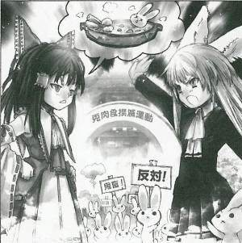
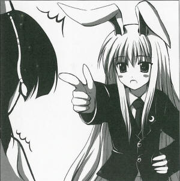

>Rabbit Horn League Protests Shrine Banquet
>Rabbit stew is annual tradition, says shrine maidenOn Xember XX, the Rabbit Horn League protested the use of rabbit in the stew ingredients for the shrine banquet.
Talks remained distant as the shrine responded to the protest:
Of course I'm using rabbit...it's rabbit stew!
The incident began when rabbit youkai crashed the shrine banquet.
Upon spotting and tasting the delicious-looking stew, she realized the meat in it was rabbit and reported this to the Rabbit Horn League leader, Reisen Udongein Inaba (rabbit).
I can't believe they're using rabbit meat as a stew ingredient.
How can something so savage be allowed?
We of the Rabbit Horn League will continue to fight until rabbit meat is off the dinner table for good! said Reisen.
In response, the shrine's Reimu Hakurei said, What's so savage about rabbit meat?
It's been a normal food for ages.
Or are they saying the rabbits themselves are savage?
Well, I suppose running around fields for the heck of it might be considered savage,
indicating her stance that she would not stop the use of rabbit meat.
The Rabbit Horn League, led by the Lunarian rabbit Reisen Udongein Inaba, is a group believing in a rabbit utopia that bonds all Earth's rabbit youkai.
Handling all the non-youkai Earth rabbits is Manager Tewi Inaba (rabbit).
Manager Tewi had this to say:
They're ordinary rabbits.
humans are gluttonous pigs who'll eat anything, so maybe it can't be helped if a few normal ones get eaten.
If they want humans to stop eating them, they'll have to look a lot more charming.
You can't eat something cute, right?
The manager is considering self-defense measures for the rabbits rather than stopping the humans who eat them, so they have dissenting opinions within the Rabbit Horn League.
The opinions of the average rabbits are unclear.
Currently, both parties have agreed to a compromise, in which chicken stew will also be made available whenever rabbit stew is offered.
 Aya
At any rate, you've compromised on offering chicken stew as well, though I find that a bit touchy.
Reisen
Humans are so stubborn! We keep repeating ourselves, but they don't listen!
Aya
Despite her looks, that shrine maiden is so inflexible, right?
Reisen
She's adhering far too much to tradition and custom. Even if they don't eat rabbit, I'm sure there are plenty of other options.
Aya
There's potatoes, mushrooms, and wild vegetables.
Reisen
Or poultry.
Aya
You're saying that on purpose, aren't you. You think I'm a bird.
Reisen
You're not?
Aya
No, I am! I am!
Reisen
They can eat their fill of poultry, for all we care. We approve of grilled chicken.
Aya
Changing the subject, why are you called the Rabbit Horn League? Rabbits don't have horns.
Reisen
And because we don't, they are a constant ideal. It means a group of rabbits who are never satisfied with the status quo, but who always strive for self-improvement.
Aya
I see. And here I was sure it meant a group that horned in noisily on just about everything.
Reisen
I guess it's crow stew tomorrow.
Aya
By the way, how were you able to reach a compromise with offering chicken stew?
Reisen
There was nothing to eat.
Aya
Oh, so you're taking part in the banquet?
Reisen
We're protesting since we're taking part but have nothing to eat.
Aya
You seem to be losing the focus of your protest...
Reisen
Who wants a banquet with nothing to eat? Or are you saying it's fine as long as there's wine?
Aya
It depends on the mood and the wine, though I like some nibbles with my drink.
Reisen
Mind you, we're leaving management of the Earth rabbits to Tewi, so if she says it can't be helped, that's it.
Aya
Rabbit camaraderie's weaker than I thought.
Reisen
She's particularly cold.
Aya
What about you?
Reisen
I'm the only Lunarian rabbit, so I don't have that much camaraderie.
Aya
And yet you formed the Rabbit Horn League? Even if without any camaraderie or similar, carrying on so coldly just seems wrong.
Reisen
Well, come on, the Earth rabbits won't listen to me at all!
Aya
You're quite the leader.
Reisen
Anyway, I'm the only Lunarian rabbit, and too few Earth rabbits understand human language...
Aya
That's true enough, but I still can't believe you formed a league.
Reisen
The League was just decided between me and Tewi. Since rabbits only follow her orders, almost everything's left to her.
Aya
I see. So what's Tewi like?
Reisen
Apparently, she was controlling rabbits long before I got to Earth, but...well, I don't really know any details.
Aya
I can't believe you'd make such a reckless, suspicious rabbit your subordinate.
Profile:
Reisen Udongein Inaba
A Lunarian rabbit who escaped from the Moon when Earthlings began an invasion.
Her red eyes drive humans mad.
Appearances:
Imperishable Night